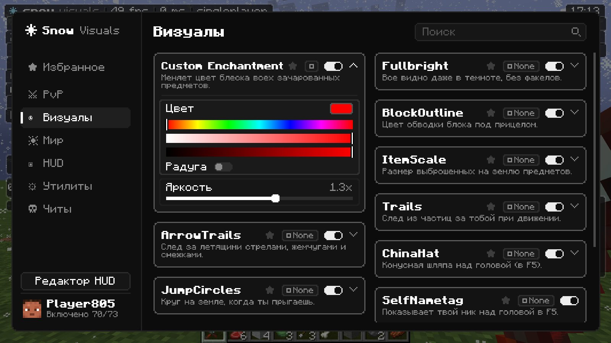
Удобное меню на правый Shift
Категории слева, поиск сверху, карточки функций в две колонки. Каждой функции можно назначить клавишу, добавить ее в избранное и настроить прямо в карточке: ползунки, цвета, режимы.
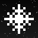
Snow Visuals СкачатьMinecraft 1.21.4 · Fabric
Визуальный мод в черно-белом стиле: удобное меню, красивый HUD, PvP-визуалы, снежное главное меню и встроенный Sodium для высокого FPS.
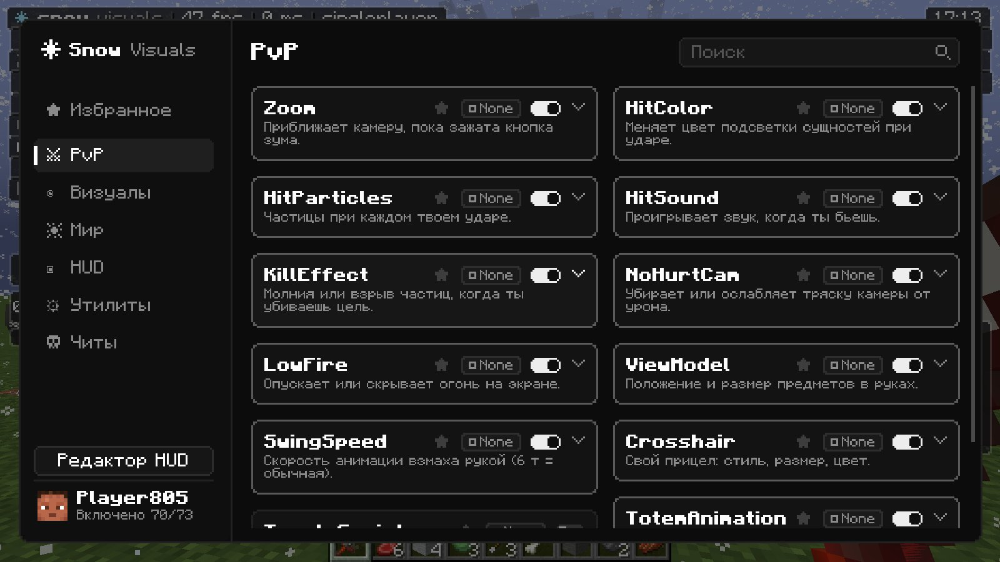
Все, что нужно для красивой и удобной игры, в одном файле.

Категории слева, поиск сверху, карточки функций в две колонки. Каждой функции можно назначить клавишу, добавить ее в избранное и настроить прямо в карточке: ползунки, цвета, режимы.
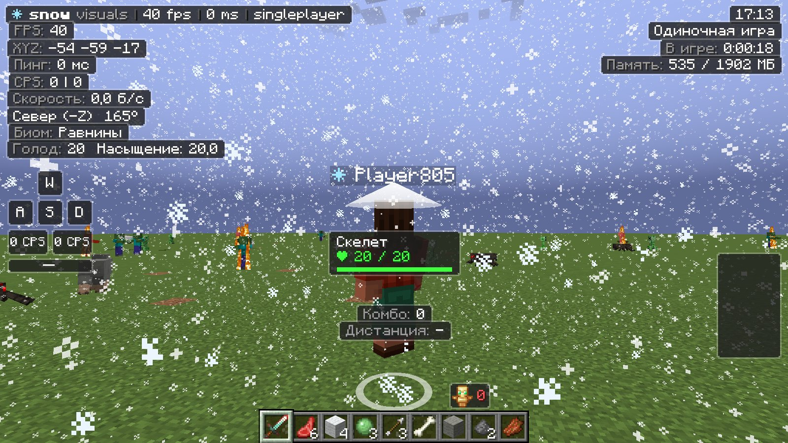
FPS, пинг, координаты, клавиши, броня, зелья, тотемы, комбо и не только. Все элементы в едином стиле, а в редакторе HUD их можно расставить мышкой где угодно.
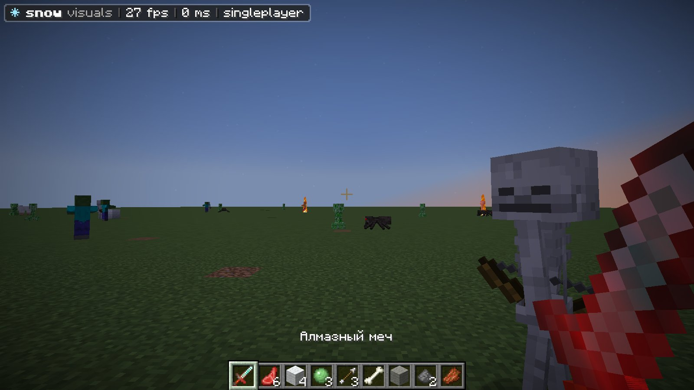
Свой цвет блеска чар, цвет удара, частицы и звук при ударе, низкий огонь, свой прицел, ViewModel, растянутое разрешение и зум с плавной анимацией.
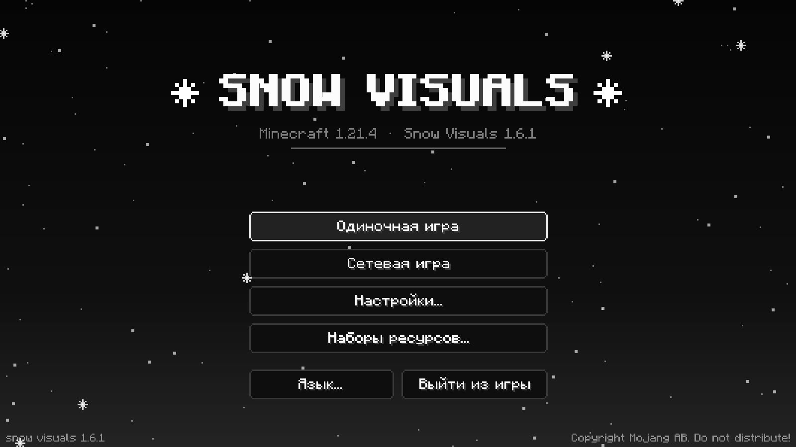
Черный фон с падающим снегом, новые кнопки и красивые экраны загрузки игры, ресурспаков и мира. Все меню игры в одном черно-белом стиле.
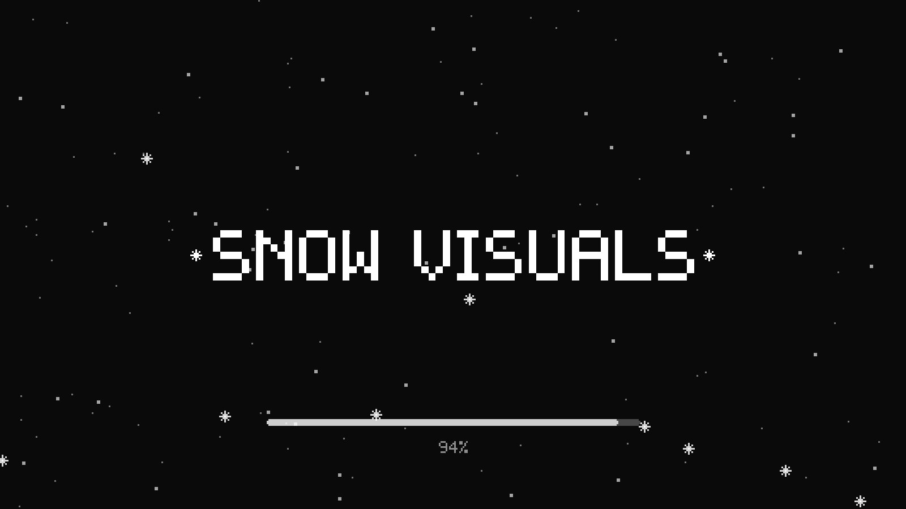
Мод сразу идет со встроенным Sodium, поэтому FPS выше и при заходе в мир меньше лагов. Отдельно ничего качать не нужно.
Нажми на категорию, чтобы посмотреть, что в ней.
Нажми на картинку, чтобы открыть ее крупно.
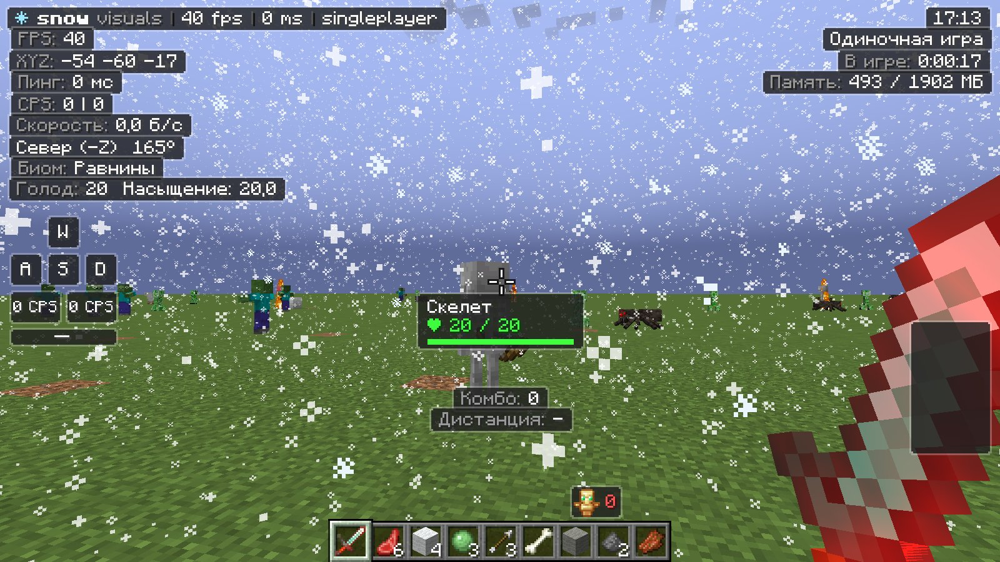
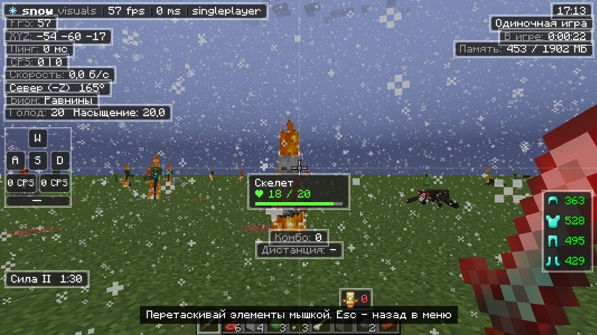
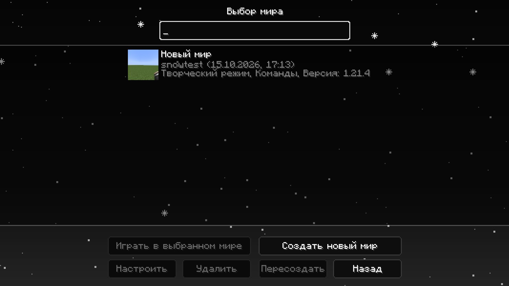
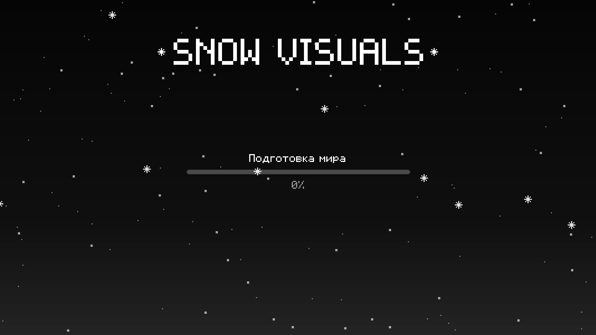
Займет пару минут.
Установи Fabric Loader для Minecraft 1.21.4 или выбери Fabric в своем лаунчере.
Возьми Fabric API для 1.21.4 и положи в папку .minecraft/mods.
Скачай мод и положи файл в ту же папку mods. Sodium уже внутри.
Зайди в игру с профилем Fabric 1.21.4 и нажми Правый Shift, чтобы открыть меню.
Нажми Правый Shift в игре. Клавишу можно поменять в настройках управления Minecraft, раздел «Snow Visuals».
Нет, он уже встроен в мод. Если у тебя стоит Sodium новее, игра сама выберет более новую версию.
В файле .minecraft/config/snowvisuals.json. Все сохраняется автоматически.
Ее видят все игроки с Snow Visuals: так видно, у кого еще стоит мод. Работает на обычных серверах без плагинов.
Некоторые серверы специально не отправляют настоящее здоровье игроков. В таком случае мод честно об этом пишет, а если сервер показывает здоровье под ником, берет его оттуда.
Да, полностью бесплатно.
Уже скачали — раз